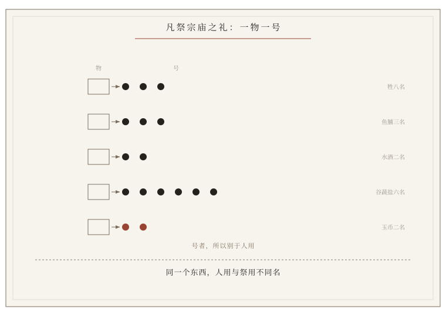

曲礼下 · 二·七十 · 第 193 课
凡祭宗庙之礼：牛曰一元大武，豕曰刚鬛，豚曰腯肥，羊曰柔毛，鸡曰翰音，犬曰羹献，雉曰疏趾，兔曰明视；脯曰尹祭，槀鱼曰商祭，鲜鱼曰脡祭；水曰清涤，酒曰清酌；黍曰芗合，粱曰芗萁，稷曰明粢，稻曰嘉蔬，韭曰丰本，盐曰咸鹾；玉曰嘉玉，币曰量币。注「号牲物者，异于人用也」。
说什么事：二十余个美号，一物一号。祭时不称其名，称其号。
落在哪一层：礼，兼及礼意。论名之敬。
为何编在此位：上节论祭之主，此节论祭之辞。主定而后辞立。
【经】凡祭宗廟之禮：牛曰「一元大武」，豕曰「剛鬛」，豚曰「腯肥」，羊曰「柔毛」，雞曰「翰音」，犬曰「羹獻」，雉曰「疏趾」，兔曰「明視」，脯曰「尹祭」，槀魚曰「商祭」，鮮魚曰「脡祭」，水曰「清滌」，酒曰「清酌」，黍曰「薌合」，粱曰「薌萁」，稷曰「明粢」，稻曰「嘉蔬」，韭曰「豐本」，鹽曰「鹹鹺」，玉曰「嘉玉」，幣曰「量幣」。
【注】號牲物者，異於人用也。元，頭也。武，跡也。腯亦肥也。翰猶長也。羹獻，食人之餘也。尹，正也。商猶量也。脡，直也。萁，辭也。豐，茂也。大鹹曰鹺。幣，帛也。
【疏】此一节论祭庙牲币告神之法。「凡祭」者，为贵贱悉然。「牛曰一元大武」者，元，头也；武，迹也；牛若肥则脚大，脚大则迹痕大，故云「一元大武」。「豕曰刚鬛」者，豕肥则毛鬛刚大也。「豚曰腯肥」，腯即充满貌。「羊曰柔毛」，羊肥则毛细而柔弱。「鸡曰翰音」，翰，长也，鸡肥则其鸣声长。「犬曰羹献」，人将所食羹余以与犬，犬得食之肥，肥可以献祭于鬼神。「雉曰疏趾」，雉肥则两足开张，趾相去疏。「兔曰明视」，兔肥则目开而视明。自牛至兔凡八物，唯牛云一头，豕以下不云数者，皆从其所用而言数也。「脯曰尹祭」，尹，正也，裁截方正而用之。「槀鱼曰商祭」，槀，乾也，商，量也，量度燥滋得中而用之。「鲜鱼曰脡祭」，脡，直也，煮熟则脡直，若馁则败碎不直。「水曰清涤」，古祭用水当酒，谓之玄酒。「酒曰清酌」，言此酒甚清澈可斟酌。「黍曰芗合」，秫既软而相合，气息又香。「粱曰芗萁」，萁，语助也。「稷曰明粢」，明，白也，言此祭祀明白粢也。隋秘书监王劭勘晋宋古本，皆无「稷曰明粢」一句，立八疑十二证；疏断之曰「王劭既背《尔雅》之说，又不见郑玄之言，苟信错书，妄生同异，改乱经籍，深可哀哉」。
一元大武 元，头；武，迹。牛肥则足迹大。
刚鬛 鬛，毛。豕肥则毛刚大。
腯肥 腯，充满之貌。
翰音 翰，长。鸣声长。
羹献 食人羹余而肥，可献。
尹祭 尹，正。裁截方正。
商祭 商，量。量度干湿得中。
脡祭 脡，直。熟而挺直。
芗合、芗萁 香而相合；萁为语辞。
明粢、嘉蔬、丰本、咸鹾 白粢、善蔬、茂本、大咸。
凡祭宗庙之礼：牛称「一元大武」，猪称「刚鬛」，小猪称「腯肥」，羊称「柔毛」，鸡称「翰音」，犬称「羹献」，雉称「疏趾」，兔称「明视」；肉干称「尹祭」，干鱼称「商祭」，鲜鱼称「脡祭」；水称「清涤」，酒称「清酌」；黍称「芗合」，粱称「芗萁」，稷称「明粢」，稻称「嘉蔬」，韭称「丰本」，盐称「咸鹾」；玉称「嘉玉」，币称「量币」。
全节只做一件事：给祭品改名。名不是修辞，是界限——「号牲物者，异于人用也」。人吃的叫豕，神享的叫刚鬛；一字之差，把日常与祭隔开。
第一层 异于人用 注五字最要。同一个东西，人用与祭用不同名。礼用改名来划界线，比用禁令更彻底：习惯了叫法，就习惯了分别。
第二层 号即是赞 每个号都在说这物的好处：牛脚大、豕毛刚、羊毛细、鸡声长、兔目明。祭不说「我有何物」，说「此物何以堪献」。号是对物的评语。
第三层 备载其名 疏「或唯有鸡犬，或唯鱼兔及水酒韭盐之祭，则各举其美号，故此经备载其名」。此经之所以长，正因祭有简有繁，故诸号皆列，随用而取。
第四层 王劭之驳 疏为王劭「无明粢一句」之说立八疑十二证之驳，断以「背《尔雅》、不见郑言、苟信错书」。此见注疏不惟疏经，亦守经之文字。
与今日何干 仪式感的一半来自改名。会议不叫开会，叫评审；病房不叫病房，叫静养。名字一换，界线就出来了。
| 左 | 右 |
|---|---|
| 牛曰一元大武 | 元头武汉，牛肥则迹大 |
| 豕曰刚鬛，羊曰柔毛 | 毛刚、毛柔，皆言肥 |
| 鸡曰翰音，兔曰明视 | 声长、目明 |
| 水曰清涤，酒曰清酌 | 玄酒与三酒 |
| 玉曰嘉玉，币曰量币 | 玉善、帛有量 |
| 号牲物者 | 异于人用也 |
画五组横排，每组左侧一枚小方牌（示实物），牌右接一串大小相同的小圆点（示其美号），点的数目依次为：第一组三枚，第二组三枚，第三组二枚，第四组六枚，第五组二枚。五组自上而下排列，左端对齐于同一竖线。五组之间以浅色细横线相隔。不写文字、不画人。赭色只用在最下一组那两枚小圆点。
